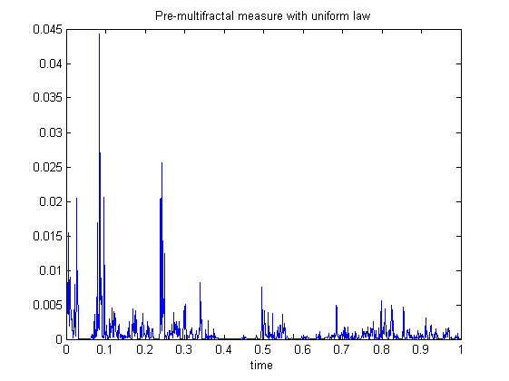
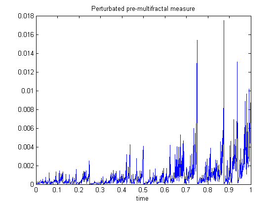

| FRACLAB Functions |
|
Generates a pre-multifractal stochastic measure related to Multinomial Measure
MES = multinomstoc(BASE,S)
MES = multinomstoc(...,'Method')
[MES,fs] = multinomstoc(...,'spec')
MES = multinomstoc(BASE,S) Generates the pre-multifractal stochastic measure, MES, using a base of the multinomial, BASE, and a number of scales, S. The parameters BASE and S are positive integers not smaller than 2.
|
The sample size, N, of the generated signal is defined by the base value and the number of scales : N = BASE^S |
MES = multinomstoc(...,'Method') Generates the pre-multifractal stochastic measure, MES, using a specific method. The supported Methods can be choosen from the list below :
| Specifier | Method Type | |
|---|---|---|
| 'unifmeas' | Synthesize a multinomial measure with uniformly distributed weights (default) | |
| 'lognmeas' | Synthesize a multinomial measure with log normaly distributed weights using a standard deviation, s. | |
| 'shufmeas' | Synthesize a shuffled multinomial measure using a vector VP containing the weight coefficients.
| |
| 'pertmeas' | Synthesize a perturbated multinomial measure using a vector VP containing the weight coefficients and a perturbation parameter, e.
The paramater e is a positive real lower than the smallest weigth coefficient |
[MES,fs] = multinomstoc(...) Generates the pre-multifractal stochastic measure, MES, and computes the associated theoretical multifractal spectrum, fs. The output fs is a structure that contains the exponents, fs.exp and the spectrum, fs.spec.
B = 2; S = 10; N = B^S; t = linspace(0,1,N);
x = multinomstoc(B,S);
figure; plot(t,x);
title('Pre-multifractal measure with uniform law'); xlabel('time')

B = 2; S = 10; N = B^S; t = linspace(0,1,N);
x = multinomstoc(B,S,'pertmeas',{[0.35;0.65] 0.2});
figure; plot(t,x);
title('Perturbated pre-multifractal measure'); xlabel('time')

[1] Carl J. G. Evertsz and Benoit B. MandelBrot, "Multifractal Measures", Chaos and Fractals, New Frontiers of Science, Appendix B,
Peitgen, Juergens and Saupe, Springer Verlag, Springer Verlag (1992) 921-953.
[2] Benoit B. MandelBrot, "A class of Multinomial Multifractal Measures with negative (latent) values for the 'Dimension' f(alpha)",
Fractals' Physical Origins and Properties, Proceeding of the Eric Meeting, 1988, L. Pietronero, Plenum Press, New York (1989) 3-29.
[3] Benoit B. MandelBrot, "Limit Lognormal Multifractal Measures", Frontiers of Physics, Landau Memorial Conference, Proceeding of Tel-Aviv Meeting, 1988
Errol Asher Gotsman, Yuval Ne'eman and Alexander Voronoi, New York Pergamon (1990) 309-340.
| |
multinom2d | multinomstoc2d | |